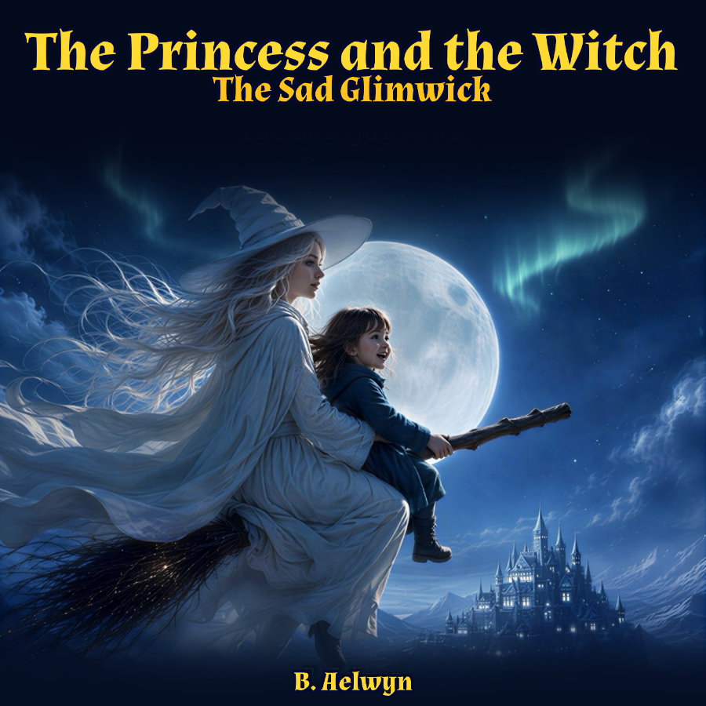

The Sad Glimwick
When four-year-old Morgan is visited in the night by a beautiful lady named Seraphina, she learns something extraordinary — she is a true princess of the royal blood, and that means she gets a guardian.
Enter Gretchen: a young witch with magnificent white robes, a hat that tilts slightly to one side, and magic that is almost certainly under control. Together they fly by broomstick to a faraway land called Vaelmere — a place of ancient forests, dancing northern lights, and creatures made entirely of living light.
When Morgan discovers a small glimwick who has lost its glow, she must find a way to help it. Not with spells. Not with wands. Just with a very small hand, held very still, and the simple courage of being kind.
Read it on Amazon →